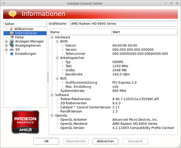

Konfiguration
Dieser Artikel wurde für die folgenden Ubuntu-Versionen getestet:
Dieser Artikel ist mit keiner aktuell unterstützten Ubuntu-Version getestet! Bitte diesen Artikel testen und das getestet-Tag entsprechend anpassen.
Zum Verständnis dieses Artikels sind folgende Seiten hilfreich:
Für die Konfiguration der Grafikkarte gibt es ein von ATI bereitgestelltes Catalyst Control Center. Dafür wird das Paket
fglrx-amdcccle (restricted, optional)
 mit apturl
mit apturl
Paketliste zum Kopieren:
sudo apt-get install fglrx-amdcccle
sudo aptitude install fglrx-amdcccle
aus den Paketquellen benötigt [1].
|  |
| Catalyst Control Center |
Bei der manuellen Installation des fglrx-Treibers von der ATI Webseite wird das Paket fglrx-amdcccle_VERSION aus der .run Datei entpackt. Die Installation ist aber optional, die 3D-Beschleunigung arbeitet auch einwandfrei ohne dieses Paket. Dennoch ist es in manchen Fällen sinnvoll, das Catalyst Control Center mitzuinstallieren, da man hierüber DualScreen oder den TV-Out leicht einstellen kann. Doch genau hier ist auch der Haken: Mehr kann das Tool nicht, seine Fähigkeiten beschränken sich auf Dual/Big-Screen-, Tv-Out- Farbeinstellungen und 3D Einstellungen wie FSAA und VSync.
Das Catalyst Control Center startet man aus dem GNOME Startmenü über
"Anwendungen -> Zubehör -> Catalyst Control Center"
bzw. über
"Anwendungen -> Sonstige -> ATI Catalyst Control Center"
Unter Unity gibt man in der Dash
"Catalyst"
ein und bekommt die beiden Vorschläge das Catalyst Control Center mit normalen oder administrativen Rechten zu starten. Das administrative Starten über das Dashboard ist allerdings momentan (Ubuntu 11.10, 25.10.2011) verbuggt, deswegen in der Konsole wie unten beschrieben starten.
Das Control Panel startet man mit dem Befehl
amdcccle
Man muss das Controlpanel mit Root-Rechten [4] starten, damit auch die xorg.conf geschrieben werden kann. Nur dann werden vorgenommene Änderung gespeichert. Anstatt oder zusätzlich zu fglrx-control kann man Einstellungen auch manuell vornehmen. Die folgenden Optionen sind nicht erforderlich, sie dienen lediglich dazu spezielle Fähigkeiten freizuschalten (TV-Out etc.) bzw. die Grafikleistung zu optimieren.
Einstellungen manuell vornehmen¶
Die Optionen werden mit einem Texteditor [2] mit Root-Rechten in die Sektion "Device" der Datei /etc/X11/xorg.conf geschrieben und oft mit "no/yes" oder "true/false" (de)aktiviert. Ein Beispiel:
| AGP Grafikkarte | PCI-Express Grafikkarte |
Section "Device" Identifier "ATI Technologies, Inc. Radeon 9800 Pro (R350 NH)" Driver "fglrx" BusID "PCI:2:0:0" Option "BusType" "AGP" Option "UseInternalAGPGART" "no" Option "AGPMode" "8" EndSection | Section "Device" Identifier "ATI Technologies Inc Radeon Mobility X700 (PCIE)" Driver "fglrx" Busid "PCI:1:0:0" Option "BusType" "PCIE" ### 2D-Optionen Option "no_accel" "no" # XAA Beschleunigung on(no)/off(yes) Option "AccelMethod" "XAA" # 2D-Hardware-Acceleration XAA, EXA ### 3D-Optionen Option "FSAAEnable" "on" # Antialiasing Option "FSAAScale" "2" # 0,2,4,6 ### TV-Out-Optionen Option "NoTV" "no" Option "TVFormat" "PAL-G" Option "TVStandard" "VIDEO" # VIDEO, SCART, YUV Option "TVOverscan" "true" EndSection |
Im Folgenden werden die einzelnen Optionen erklärt.
| Allgemeine Optionen | Bedeutung |
Option "AGPMode" | Bestimmt die AGP Geschwindigkeit. Mögliche Werte sind "2", "4" und "8" |
Option "AGPFastWrite" "true" | Diese Option erhöht theoretisch die Geschwindigkeit, kann aber zu Instabilität führen. |
Option "UseInternalAGPGART" | Standardmäßig nutzt der ATI Treiber den eigenen AGP-Gart-Treiber ("no"). Wenn der deutlich schnellere des Mainbords benutzt werden soll, muss auf "yes" gestellt werden. Allerdings muss dafür der AGP-Gart-Treiber des entsprechenden Chipsatzes im Kernel einkompiliert oder als Modul vorhanden sein. Da manche Grafikkarten jedoch mit deaktivierter Option nicht laufen, ist Ausprobieren angesagt. |
Option "EnablePageFlip" "true" | Beim Page-Flipping tauschen Front-Buffer und Back-Buffer ihre Aufgabe. Der Back-Buffer mit dem fertig berechneten Frame wird zum Front-Buffer der dieses Frame zur Darstellung frei gibt. Und der bisherige Front-Buffer wird zum Back-Buffer um die Ergebnisse des nächsten Frames aufzunehmen bis diese komplett sind. Dann beginnt das Ganze wieder von vorne. Damit soll eine Artefaktbildung verhindert werden. |
Option "backingstore" "true" | Dies ist ein Mechanismus, bei dem die Pixelpositionen von überfüllten Bildbereichen vom Server gespeichert werden. Somit hat es der Server leichter, Signale an die X-Client zu schicken, wenn das Fenster nochmals angezeigt werden muss. (entnommen aus den gentoo wiki). |
Option "VideoOverlay" | Schaltet Video Overlay für die Xv-Erweiterung ein ("on") oder aus ("off"). |
Option "TexturedVideo" | Schaltet Video Overlay für die Xv-Erweiterung bei Karten mit AVIVO ein ("on") oder aus ("off"). |
Option "OpenGLOverlay" | Schaltet OpenGL Overlay ein ("on") oder aus ("off"). Wenn dies eingeschaltet ist, schaltet sich "VideoOverlay" automatisch aus. |
Option "no_accel" "no" | Schaltet die XAA-Erweiterung ein ("no") oder aus ("yes"). Das Aktivieren dieser Option beschleunigt bestimmte Algorithmen. |
Option "no_dri" "no" | Schaltet die DRI-Erweiterung (Directrendering) ein ("no") oder aus ("yes"). |
Option "AllowGLXWithComposite" "true" | Dadurch gibt es einen merklichen Geschwindigkeitsanstieg in Zusammenhang mit der Composite-Erweiterung. |
Option "CenterMode" "off" | Unter Umständen funktionieren OpenGL-Programme, die die GLX-Erweiterung nutzen (z. B. glxgears), nicht. Das Hinzufügen der Option kann das Problem beheben. |
| Grafische Verbesserungen | Bedeutung |
Option "FSAAEnable" | Schaltet die Kantenglättung ein ("yes") oder aus ("no"). Aktivierte Kantenglättung kostet aber Leistung. |
Option "FSAAScale" | Bestimmt den Grad der Kantenglättung (mögliche Werte "0", "2", "4" oder "6"). Je höher der Wert, desto schöner wird das Ergebnis, natürlich auf Kosten der Leistung. |
Option "FSAADisableGamma" | Gamma bei aktivierte Kantenglättung ein- ("no") oder ausschalten ("yes"). |
Option "FSAACustomizeMSPos" "no" | Schaltet die folgenden spezifischen Optionen frei. Dies sind spezifische Werte für Kantenglättung. Hier gilt es zu testen, was bei einem am besten läuft: |
Option "FSAAMSPosX0" "0.250000" | |
Option "FSAAMSPosY0" "0.416666" | |
Option "FSAAMSPosX1" "0.083333" | |
Option "FSAAMSPosY1" "0.083333" | |
Option "FSAAMSPosX2" "0.416666" | |
Option "FSAAMSPosY2" "0.750000" | |
Option "FSAAMSPosX3" "0.750000" | |
Option "FSAAMSPosY3" "0.916666" | |
Option "FSAAMSPosX4" "0.583333" | |
Option "FSAAMSPosY4" "0.250000" | |
Option "FSAAMSPosX5" "0.916666" | |
Option "FSAAMSPosY5" "0.583333" | |
| TV-Optionen | Bedeutung |
Option "NoTV" | Schaltet den TV-Ausgang ein ("no") oder aus ("yes"). |
Option "TVFormat" | Reguliert das TV-Format des ausgehenden Signals. Mögliche Werte sind "NTSC-M", "NTSC-N", "NTSC-JPN", "PAL-B", "PAL-L", "PAL-D", "PAL-G", "PAL-H", "PAL-I", "PAL-K", "PAL-N", "PAL-M", "PAL-SCART", "PAL-CN", "PAL-K1". Für Deutschland sind "PAL-B" und "PAL-G" zu empfehlen. |
Option "TVStandard" | Gibt an, wie der TV angeschlossen ist. Mögliche Werte sind "VIDEO", "SCART", "YUV". |
Option "TVOverscan" | Aktiviert den Overscan-Modus. Mögliche Werte sind "on" und "off". Ist diese Option nicht angegeben, so ist Overscan standardmäßig aktiviert. |
Option "TVHSizeAdj" "0" | Dies sind spezifische Werte für den TV-Ausgang wie z.B. Bildposition und Gamma-Wert. Hier gilt es zu testen, um die korrekte Einstellung zu finden. |
Option "TVVSizeAdj" "0" | |
Option "TVHPosAdj" "0" | |
Option "TVVPosAdj" "0" | |
Option "TVHStartAdj" "0" | |
Option "TVColorAdj" "0" | |
Option "GammaCorrectionI" "0x00000000" | |
Option "GammaCorrectionII" "0x00000000" | |
| Sonstige Optionen | Bedeutung |
Option "PseudoColorVisuals" "off" | Visual nennt man im X-Jargon den Modus, in dem eine Grafikkarte betrieben wird. Die meisten Karten beherrschen mehrere visuals. So kann z.B. eine Farbkarte auch im GrayScale-Modus arbeiten, oder ein 24-Bit Monitor mit PseudoColor. Das visual kann man für viele Anwendungen frei einstellen. (xdpyinfo zeigt die verfügbaren an.) |
Option "Stereo" "on" | Quad Buffer Stereo einschalten (3D-Brille etc.). |
Option "StereoSyncEnable" "1" | Eine weitere Option für QBS. |
Option "UseFastTLS" | FastTLS betrifft lediglich die Workstation-Grafikkarten von ATI. Mögliche Werte: |
"0" (default) - FireGL workstation boards: fast operation | |
"1" (on) - fast operation | |
"2" (off) - compatible operation, manche Programme (z.B. Wine) funktionieren nur in diesem Modus |
Chiptaktung¶
Die dynamische Takung des Grafikchips je nach Last übernimmt der Treiber seit einigen Jahren automatisch. Über den Befehl
aticonfig --od-getclocks
kann man das Ergebnis beobachten.

 Übersichtsseite
Übersichtsseite- Erstellt mit Inyoka
-
 2004 – 2017 ubuntuusers.de • Einige Rechte vorbehalten
2004 – 2017 ubuntuusers.de • Einige Rechte vorbehalten
Lizenz • Kontakt • Datenschutz • Impressum • Serverstatus -
Serverhousing gespendet von